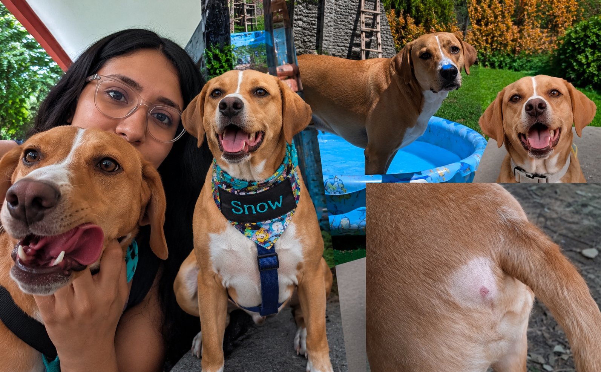
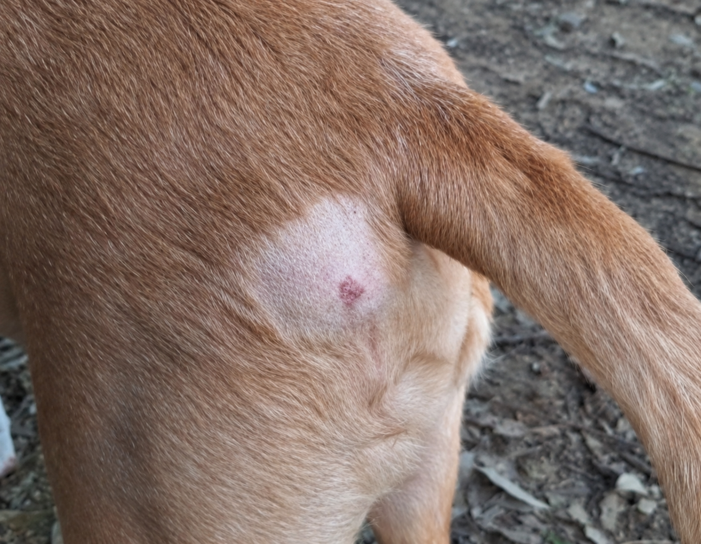
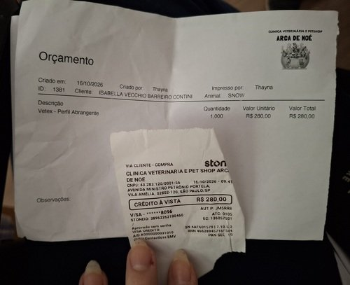

Ajude o Snow a vencer essa batalha: precisamos custear sua cirurgia
O Snow faz parte da nossa família desde 2019, quando chegou até nós com apenas 4 meses de vida. Hoje, depois de quase 7 anos, ele continua muito amado por todos ao seu redor.
Durante todos esses anos, o Snow sempre foi um cachorro muito saudável. Nunca imaginamos que precisaríamos passar por uma situação como esta. Infelizmente, ele foi diagnosticado com mastocitoma, um tipo de tumor agressivo que precisa ser tratado, e agora precisamos nos organizar para realizar sua cirurgia em breve.

O tratamento indicado envolve não apenas a cirurgia para retirada do mastocitoma, mas também a eletroquimioterapia, um procedimento que faz parte do planejamento para tratar o tumor. Por isso, precisamos custear as duas etapas, além dos exames pré-operatórios necessários para avaliar as condições de saúde do Snow antes da cirurgia.
Quando um animal faz parte da nossa família, é muito difícil não sentir medo ao descobrir que ele precisa enfrentar algo assim. Queremos dar ao Snow os cuidados necessários, mas os custos do tratamento são altos e, por isso, estamos pedindo ajuda.
Para onde vai o dinheiro?
Estamos organizando esta vaquinha para custear os exames pré-operatórios e a cirurgia do Snow. Já temos os orçamentos da clínica veterinária e queremos compartilhar os valores com transparência.
Exames pré-operatórios: R$ 890,00
- EcocardiogramaR$ 230,00
- EletrocardiogramaR$ 140,00
- Raio-X de tórax em 3 projeçõesR$ 240,00
- Exames de sangueR$ 280,00
.jpg)
